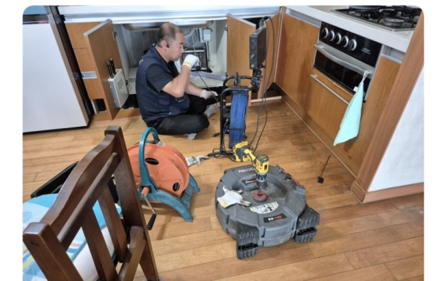

안녕하세요, 고고고설비입니다. 오늘 고고고설비가 아파트 싱크대 막힘 현장에 다녀왔습니다. 처음에는 싱크대 아래에서 해결하려 했지만, P-트랩 지나 배관 깊숙한 곳에 막힘이 있어서 샤프트 작업을 통해 아래층 상가 천장에서 접근해 해결해 드렸어요. 보다 자세히, 이해하기 쉽게 설명드릴게요.
이번 경우 같은 아파트 단지의 복잡한 배관 구조 때문에, 싱크대 하부만으로는 샤프트를 원하는 깊이까지 넣기 어려웠어요. 그래서 아래층 상가의 천장을 열고 배관에 직접 접근한 뒤 샤프트 작업을 진행하는 방식이 가장 효과적이었습니다.
현장 상황 확인 — 싱크대가 막힌 상태를 점검하고, 전체 배관 구조를 살펴보았습니다.
접근 경로 확보 — 아래층 상가 천장을 통해 작업 가능한 경로를 확보했습니다.
샤프트 작업 진행 — 유연한 샤프트 케이블을 회전시키며 문제 지점까지 내려가 배관 내부에 쌓인 이물질을 밀어내거나 깎아내었습니다.
배수 흐름 확인 — 막혔던 물이 다시 부드럽게 내려가는 것을 확인하며, 작업이 완벽히 완료되었음을 최종 점검했습니다.